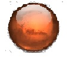

 es una misión espacial del Programa de Exploración de Marte estadounidense realizado por la NASA con destino al planeta Marte, con lanzamiento realizado el de julio de 2020,y aterrizado el 18 de febrero de 2021.345 Fue lanzado en la ventana marciana de 2020 (de ahí el origen de su nombre), siendo la tercera y última misión en aprovechar dicha ventana, tras la misión emiratí Hope y la china Tianwen-1. Para llevar a cabo su misión planetaria, incluye un rover y un pequeño helicóptero: el helicóptero explorador Ingenuity, cuya función es planificar la mejor ruta para el desplazamiento del rover Perseverance,que con sus instrumentos científicos estudiará el entorno astrobiológicamente antiguo del planeta e investigará sus procesos geológicos tanto de la superficie como de su interior e historia,incluida la evaluación de su habitabilidad, la posibilidad de existencia de vida en su lejano pasado y el potencial para la preservación de las biofirmas dentro de los materiales geológicos accesibles actualmente.67 Guardará en pequeños contenedores muestras recolectadas a lo largo de su ruta para una posible misión futura de retorno de muestras.789 La misión fue anunciada por la NASA el 4 de diciembre de 2012 en la reunión de otoño de la Unión Americana de Geofísica en San Francisco.10 El diseño del rover Perseverance se deriva del rover Curiosity, y utilizará muchos componentes ya fabricados y probados, nuevos instrumentos científicos y un taladro de núcleo.11 El lugar donde aterrizó la misión es el cráter Jezero12 localizado en el cuadrángulo de Syrtis Major en las coordenadas 18.855, 77.519.1314
![sin coneccion]()
Los tubos de muestra se cargan en el vehículo Perseverance. Estos tubos, lanzados desde la Tierra en julio de 2020, pueden convertirse en el primer equipo en completar un viaje de ida y vuelta a Marte y regresar en 2031. La misión buscará signos de condiciones habitables en Marte en el pasado antiguo y también buscará evidencia, o biofirmas, de vida microbiana pasada y agua. La misión se lanzó el 30 de julio de 2020 en un Atlas V-541,10 y el Laboratorio de Propulsión a Reacción gestionó la misión. La misión es parte del Programa de Exploración de Marte de la NASA.1516178 El Equipo de Definición de Ciencia propuso que el rover recolectara y empaquetara hasta 31 muestras de núcleos de roca y suelo superficial para una misión posterior y llevarlas de regreso para un análisis definitivo en la Tierra.18 En 2015, expandieron el concepto, planeando recolectar aún más muestras y distribuir los tubos en pequeñas pilas o cachés por la superficie de Marte.19 En septiembre de 2013, la NASA lanzó un Anuncio de oportunidad para que los investigadores propongan y desarrollen los instrumentos necesarios, incluido el .2021 Los instrumentos científicos para la misión fueron seleccionados en julio de 2014 tras un concurso abierto basado en los objetivos científicos marcados un año antes.2223 La ciencia realizada por los instrumentos del rover proporcionará el contexto necesario para los análisis detallados de las muestras devueltas.24 El presidente del Equipo de Definición de Ciencia declaró que la NASA no presume que haya existido vida en Marte, pero dados los recientes hallazgos del rover Curiosity, parece posible que haya vida marciana pasada.24
Artículo principal: Perseverance (rover)
Proyecto Perseverance, carga útil del rover22
El rover se basa en el diseño del Curiosity.10 Si bien hay diferencias en los instrumentos científicos y la ingeniería necesaria para apoyarlos, todo el sistema de aterrizaje (incluyendo el sistema de aterrizaje Skycrane y el escudo de calor) y el chasis del rover ha sido esencialmente recreado sin ingeniería o investigación adicional. Esto reduce el riesgo técnico general para la misión, mientras que ahorra tiempo y recursos en el desarrollo.40
Entre los restos del equipo Curiosity, un generador termoeléctrico de radioisótopos— originalmente concebido como una parte de respaldo para Curiosity— suministra potencia al vehículo.1041
La misión rover y su puesta en marcha se estima que costará cerca de 2,1 mil millones de dólares.28 Su predecesor, el Mars Science Laboratory, costó 2,5 mil millones de dólares.10 La NASA trabajó para estimar su coste desde el día de la convocatoria.42 El Director de Misiones Científicas de la NASA, John Grunsfeld, dijo que era la disponibilidad de piezas de repuesto que haría que el nuevo rover fuese asequible dentro del presupuesto de la NASA. El equipo de ingeniería del Curiosity también participará en el diseño del nuevo rover.1043
En octubre de 2016, la NASA informó que utilizó el cohete Xombie para probar el Lander Vision System (LVS), como parte de las tecnologías experimentales de prueba de descenso autónomo y ascenso asistido (ADAPT), para el aterrizaje de la misión Perseverance.44
Artículo principal: Mars Helicopter Ingenuity Representación artística del dron en Marte. Ingenuity es un dron que servirá como demostrador tecnológico para buscar lugares y ayudar a Perseverance a encontrar la mejor ruta para llegar a objetivos.4546 La aeronave se desplegará desde la cubierta del rover y se espera que vuele hasta cinco veces durante su campaña de prueba de 30 días al principio de la misión.47 Cada vuelo no durará más de tres minutos, a altitudes que oscilan entre los 3 y los 10 metros sobre el suelo, cubriendo potencialmente una distancia de de 600 metros por vuelo.48 Funcionará autonomamente y se comunicará con Perseverance tras finalizar cada vuelo. Si funcioná como se espera, la NASA considerará naves similares para futuras misiones.49
la nasa hoy
realizado por diego pumarejo telefono 3044679121 universidad de la guajira facultad de ingenieria de sistemas